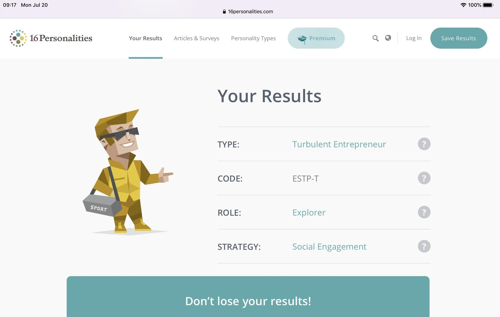
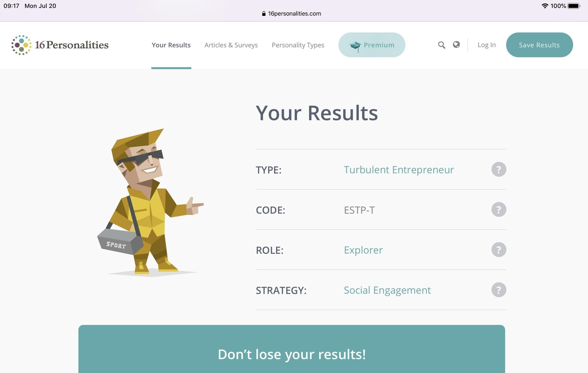

4-Tech Team

LA TRAN HAI DANG
Firstly, I will introduce some information about myself. My full name is La Tran Hai Dang and my student number is s3836605. I have been living and studying in District 1 of Ho Chi Minh City for 20 years. Currently, I am a second-year student with my first semester in major that is a bachelor of information technology at RMIT Vietnam University. For me, the field of science and technology, especially information technology, has brought me the passion to learn new knowledge by the vastness of the IT world. I first encountered programming in grade 8, when it was the pascal programming language as an official subject in the school curriculum. I was intrigued by the command lines and the magic of computer algorithms. Since then, I have decided to enter the computer science class at high school and have achieved the silver medal for good students in IT. Besides, not only interested in technology but also music for example playing instruments and participating in volunteer activities are my hobbies. I hope that the time I spend studying and researching information technology will help me improve my professional knowledge and hands-on experience in the technology industry.

HUYNH VAN ANH
My full name is Huynh Van Anh, and my student ID is 3836320. I come from Vinh Long City, after graduating from Nguyen Binh Khiem High School, I am now studying at RMIT University. Previously, I was a student specializing in Chemistry. Instead of choosing to become a doctor or pharmacist, I followed my passion and became a member of SST (School of Science and Technology). I have a great curiosity to explore the Data Industry, and I expect to be a Data Scientist. Our team name is called '4tech', which stands for 'Four for Technology.' It is also similar to our Project Idea product's name.
TRINH QUANG MINH
My name is Trinh Quang Minh. My student ID is s3848088. I am Vietnamese, born in Ho Chi Minh city and I’ve spent three years studying abroad in Sydney, Australia and graduated high school there. My hobbies are playing an instrument (piano and guitar), listening to music, and playing games. I like playing games and I’m curious about how they operate behind the scenes. I also like to sit on my computer doing research, so I think doing IT is suitable for me. I’ve had the basic knowledge about coding in Python 3.0+ as it was a part of the study program that I took part in.

PHAM GIA NGUYEN
My name is Pham Gia Nguyen, my student ID is s2819521. Ho Chi Minh city is where I was born and grew up. Currently, in 2020, I am studying Information Technology program at RMIT with specialising in web development because I want to be a full-stack developer and mobile developer. In the past, I used to have a strong passion for football and swimming because I can connect closer to my friends and I can train myself. I have won a championship in a competition in high school. I have to admit that it is the best experience and exciting during my high school lifetime. However, my passion for IT became large when I saw my big brother, a competitive programmer, solving many challenging database problems such as arrays, multidimensional arrays and matrices in an online contest every weekend. Then, I follow his path to solving problems on the Leetcode website and join a contest at the weekends.
4-Tech Team

 

When working in a team, one of the skills needed to get the most out of a job is listening. Based on the results of my learning style test, the auditory learning style allowed me to easily listen and understand the opinions of the group members. I am a practical and appropriate person to solve difficult group problems in a flexible way instead of working with boring theory. Besides, with good observation and ability to communicate I will be one of the connections that help the team can work together comfortably. Also, as a result of my personality test and Myers-Briggs, I always have a positive and responsible energy in my assigned work. This is important and necessary in team work because it brings dynamism, respect, contribution, and improvement of strengths and weaknesses to achieve the goals set by the group.


Because of having an ability to observe, pay attention to others. It is a high score for teamwork; moreover, the second point is being a decisive person in decisions. I confidently arrange the task and timeline to complete the work for our team. As an effective learner by hearing, I have a tendency to listen and synthesize different ideas before progressing a final decision. With all of the above, I believe that my good sides can play a crucial role in our group.


From the 3 tests’ results, I found out that I am more of an introverted person, so I and strong in the listening skill but I need to improve my communication skill much more to share ideas with my team as that is an important skill to have in order to bring the best results to the project.


Being critical thinking and judging, I can provide useful solutions and sources of the information for the projects with high accuracy. The outcomes will be affected by the decisions of each team member; therefore, having a good vision and judging can improve team performance. Also, I tend to learn by writing down, which I can remember much longer. It is great to share not only with my teammates but also for someone curious about what I have experienced and learnt.
From the 3 tests’ results, I found out that I am more of an introverted person, so I and strong in the listening skill but I need to improve my communication skill much more to share ideas with my team as that is an important skill to have in order to bring the best results to the project.